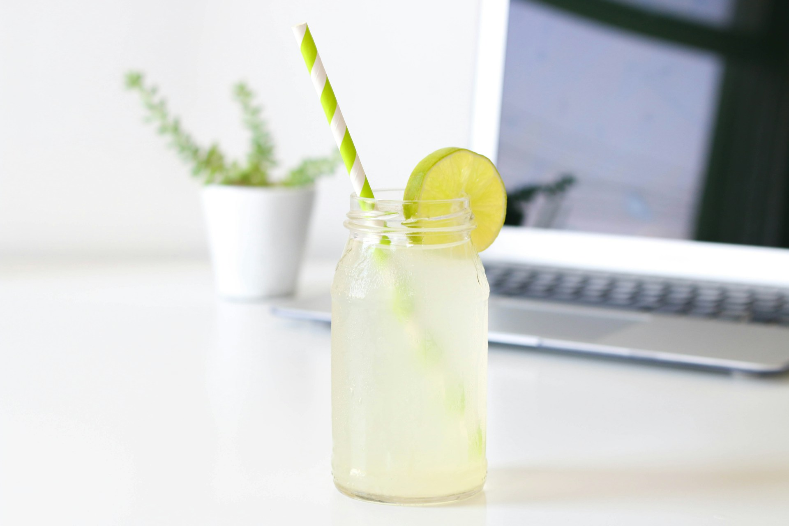

Cómo hacer limonada casera con solo 3 ingredientes.
Cómo hacer limonada casera, una bebida rica en vitamina C con fruta
fresca, perfecta para hidratarse de forma
natural. ¡Muy fácil de preparar con solo 3 ingredientes!

Vaso lleno de limonada
Ingredientes
4 de limones
80 gramos de azúcar
500 gramos de hielos
500 mililitros de agua
Hojas de menta (para decorar)
Elaboración
Lava bien un limón y retírale la piel. Pon la piel en el vaso de la
batidora.
Pela los 4 limones de modo que solo queden los gajos, sin piel ni
parte blanca. Retira las pepitas.
Pon los limones y el azúcar en el vaso de la batidora y tritura
todo.
Añade el hielo y el agua al vaso de la batidora. Tritura de nuevo
hasta que quede todo bien integrado. Cuela
la
limonada.
Sirve la limonada natural casera.
Si lo deseas, añade unos cubitos de hielo a la hora de servir.
También puedes decorarla con unas hojas de
menta
y unas rodajas finas de limón.
Consejos y preguntas frecuentes
¿Qué beneficios tiene la limonada?
La limonada, además de ser perfecta para ayudarnos a mantenernos
hidratados en los días de más calor, gracias al
zumo de limón, también es una fuente muy rica de vitamina
C. Un potenciador natural del sistema
inmune.
¿Cuánto tiempo puede durar una limonada?
Nosotros siempre recomendamos servir la limonada recién
hecha, pero si preferís dejarla
preparada
con antelación debés saber que podemos conservarla en la nevera
durante 2-3 días.